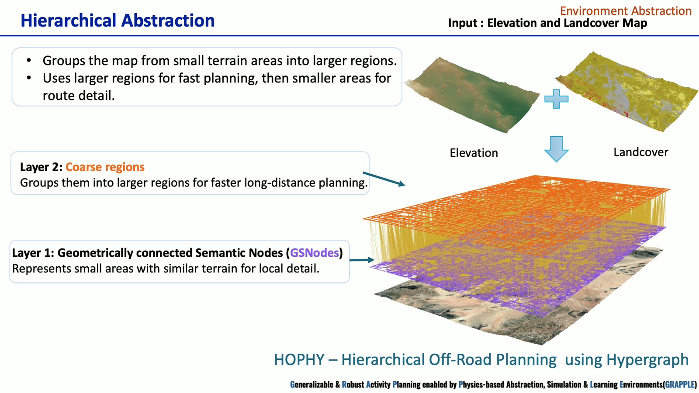
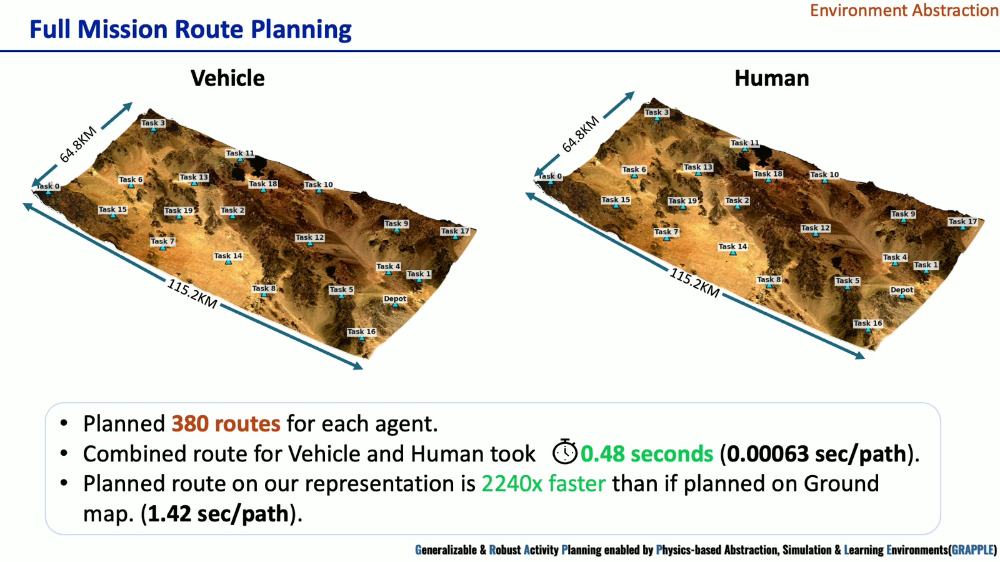

Research overview
Abstract
Environment abstraction converts dense elevation and landcover rasters into a representation that supports long-distance planning while retaining local terrain detail. The demonstration presents HOPHY, Hierarchical Off-Road Planning using Hypergraph, and connects its coarse-to-fine routing process to agent-specific human and vehicle mobility costs. Local weather changes update route suitability so the system can revise paths and supply routes to the course-of-action planner.
Research problem
Mission-scale raster maps contain millions of cells. Searching this terrain repeatedly for different agents and task pairs is expensive. GRAPPLE organizes similar terrain into connected regions, allowing a planner to reason over larger areas before refining the selected route.
The demonstration covers a 115.2 km × 64.8 km mission area with a 3,840 × 2,160 raster at 30 m resolution, approximately 7,465 km². Elevation and landcover provide complementary information about terrain geometry and surface type. [1, 1:00–1:30]
Representation and planning method
- Terrain inputs. Elevation and landcover maps describe the mission area, including vegetation, barren land, built-up areas, wetlands, and water.
- Local semantic regions. Geometrically connected Semantic Nodes group small areas with similar terrain characteristics.
- Coarse regions. A second layer groups local regions to accelerate long-distance search.
- Coarse-to-fine routing. The planner first selects a coarse route, then refines the relevant regions to recover local detail.
- Agent-specific costs. Human and vehicle models produce different routes between the same task pair.
The video identifies the representation as HOPHY and illustrates both abstraction layers and the resulting coarse and refined paths. [1, 1:30–2:15]
Weather updates and module interfaces
Localized heavy rain makes part of a nominal route less suitable. The demonstration updates the affected representation and replans the human and vehicle paths around the rain region. Terrain structure and agent-specific traversal costs jointly determine the revised route.
This module supplies the route information used by COA generation. The human and vehicle modules supply mobility costs, while environmental changes feed back into route planning. [1, 2:15–2:45]
Reported demonstration results
| Experiment | Reported value | Context |
|---|---|---|
| Single task-pair route | 0.013 s | Human and vehicle route demonstration |
| Localized weather update | 0.09 s | Rain-region update; revised route also labeled 0.013 s |
| Full mission routing | 380 routes per agent | Vehicle and human route sets |
| Combined route computation | 0.48 s | 0.00063 s per path, as reported |
| Ground-map comparison | 2,240× faster | Ground-map baseline: 1.42 s per path |
The introduction separately reports 1,200× faster planning and a 30 ms weather update. These are overview claims, whereas the values above belong to the specific video demonstration. They are retained separately because the supplied materials do not establish identical benchmark conditions. [1, 2:00–2:45; 2, slide 3]
Research figures


Module demonstration
Full supplied presentation · 3:00. Chapter links open the video at the indicated point. The written sections above provide a companion description of the methods and demonstrations.
Sources and research context
- Abstraction_Video.mp4. Supplied GRAPPLE module presentation. Figures reproduced from the video; chapter times are approximate.
- ONR introduction slides. Program, research challenge, four-module workflow, and team; slides 1–4.
Results on this page are attributed to the supplied presentations. The materials do not include full benchmark protocols or bibliographic records for every component.

{kind=link}
{kind=link}